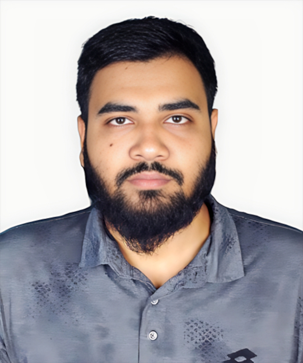

Vision for Automated Tomato Harvesting
Combining tomato detection, maturity classification, and peduncle localization to estimate picking points in unstructured agricultural imagery.
I’m an Electrical and Electronic Engineering graduate from Chittagong University of Engineering and Technology (CUET). My academic background in sensing, signals, and control complements my independently developed experience in machine learning.
I am interested in how models interpret images and language, and how these capabilities can support perception and decision-making in physical systems.

Combining tomato detection, maturity classification, and peduncle localization to estimate picking points in unstructured agricultural imagery.
Adapting MDETR with XLM-R to locate objects described by Bengali phrases, while evaluating performance in both Bengali and English.
Comparing language models for Bengali symptom-text classification, with explainability analyses and a disease-to-specialist mapping.
Python · MATLAB · C
NumPy · Pandas · Matplotlib
PyTorch · TensorFlow · Scikit-learn
Arduino · ROS 2
Linux · Git · Conda · JupyterLab
ADS · Cadence Virtuoso · RSoft · AutoCAD
Chittagong University of Engineering and Technology (CUET)
Chattogram, Bangladesh
Dhaka Residential Model College
Dhaka, Bangladesh
Lakshmipur Adarsha Samad Govt. High School
Lakshmipur, Bangladesh